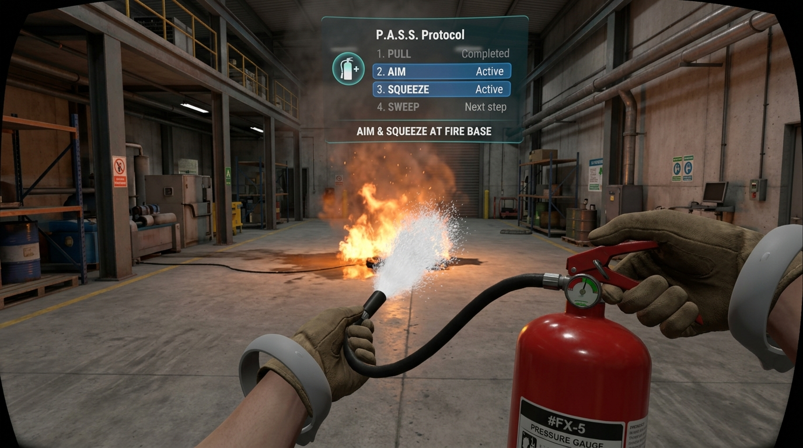

Experiencia del Simulador VR
Demostración del pipeline interactivo implementado en Meta Quest 2: consola de simulación del protocolo P.A.S.S., retroalimentación cinemática y selector de tipos de extintores.
Protocolo Normativo P.A.S.S. en Realidad Virtual

Mapeo de Controles Hápticos en Meta Touch (6 DoF)
Mano Dominante (Sujeción de Cuerpo y Gatillo)
Botón Grip (Empuñadura Lateral)
Levantar el extintor del soporte de pared y sostenerlo por el asa de transporte inferior con cálculo de centro de gravedad dinámico.
Gatillo Index (Palanca Superior de Descarga)
Presión analógica proporcional: regula el caudal del agente extintor y activa la vibración continua de retroceso.
Mano Secundaria (Dirección de la Tobera y Seguro)
Pinch / Grip en Pasador
Acercar la mano secundaria al anillo del pasador y tirar hacia afuera con un movimiento rápido para romper el sello plástico virtual.
Grip en la Manguera / Tobera
Sujeción a 10 cm de la boquilla para estabilizar el cono de dispersión y orientar el barrido angular con precisión de milímetros.
Clasificación de Incendios y Extintores en el Simulador
Haz clic en cada clase de fuego para examinar sus propiedades termodinámicas, agente extintor certificado y el escenario virtual programado:
Clase A - Materiales Sólidos Orgánicos
Triángulo Verde [A]Combustibles: Madera, papel, cartón, textiles, plásticos y basura común.
Agente Extintor Recomendado: Agua presurizada o Polvo Químico Seco (PQS ABC).
Técnica de Combate: Enfriamiento directo de la brasa con agua o sofocación con polvo químico seco.
Escenario en el Simulador VR: Simulación de incendio en archivador de oficina y tarimas de madera de almacén universitario.